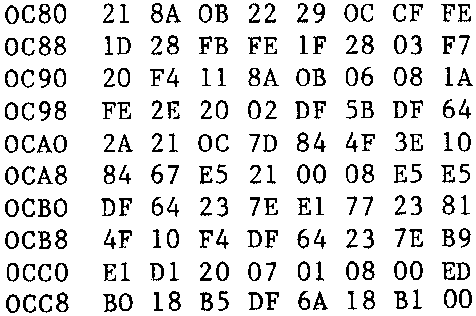

INMC 80 News |
February–April 1981 · Issue 3 |
| Page 5 of 55 |
|---|
As anew member may I first of all congratulate the Committee on an excellent publication which is both highly informative and yet very readable.
I would like to make a couple of comments. The first is with regard to the criticism, by some of your correspondents, of the Nascom-2 documentation. Having had experience of the documentation supplied with other micros, I was absolutely delighted when I received the Nascom manual. Obviously it contains the odd error, or is brief in places, but compared with other manufacturers” manuals I think it is to be commended not condemned. It cannot be expected to be “all things to all users”.
My second comment concerns possible future articles. I consider myself a reasonably competent BASIC programmer and am slowly beginning to feel my way around using machine code. However, my knowedge at the more technical side of the Nascom is very limited. Would it therefore be possible for someone to prepare a few ‘noddy’ articles on , say, general electronics (how does a decoupling capacitor work, tips on using multimeters etc) and perhaps on certain aspects of the Nascom design.
Finally, I read with a sinking heart the debate in your pages on running BASIC without WAIT. I have difficulty running BASIC with WAIT! My system appears to have an undocumented – ‘Trample-on and change string’ function. In large programs strings are corrupted – particularly when involved in routines printing to the top line of the screen. Result – the program eventually fails or, occasionally, BASIC crashes completely. I do not think this is anything to do with the dreaded ‘Plague’ but I do not have any idea where to start looking for a solution – has anyone else had this problem?
Tan Irving – Thatcham, Berkshire.
ED – see elsewhere in this issue re. your “trample-on and change strings” problem.
Other members who, like me, have upgraded from Nasbug T2 to NAS-SYS may find the following program useful. It solves the problem of what to do with all those programs that were saved on cassette using Nasbug, but won’t load under NAS-SYS.
It is an adaptation of the Nasbug cassette Load sub-routine, running under NAS-SYS. One difference between it and the original ‘L’ Command is that it stores the loaded programs at the header address + 1000H in order to avoid overlapping monitor workspace and stack (this assumes some memory expansion, of course).
Additionally, the displacement of 1000H makes it easier to modify the absolute jumps, etc. that are necessary after re-location.
To use the load program, execute at 0C80, then load from cassette. The VDU format and error-checking are as under Nasbug.
Paul de Bak, SWEDEN
| Page 5 of 55 |
|---|